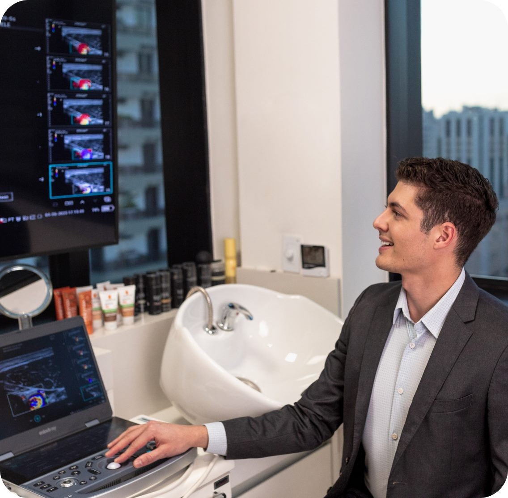
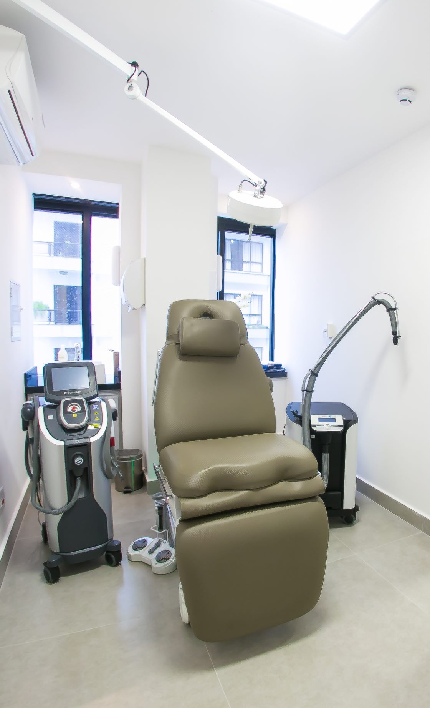

Retirada de preenchimento guiada por ultrassom
Antes de dissolver, é preciso enxergar.
A retirada de preenchimento feita às cegas pode remover o que não precisava sair e deixar o que estava incomodando. Aqui, o produto é localizado por ultrassonografia de alta resolução da pele antes de qualquer aplicação de hialuronidase, para tratar exatamente o que está causando o problema.
Atendimento com dermatologista especializado em ultrassonografia dermatológica pela UNIFESP, preceptor do Ambulatório de Ultrassom de Pele e Complicações Estéticas da mesma universidade.
Atendimento na Vila Clementino, São Paulo · Resposta pelo WhatsApp

SINAIS DE ALERTA
Quando o preenchimento deixa de ser resultado e passa a ser problema
Nem todo desconforto após um preenchimento exige retirada e nem todo preenchimento que incomoda está no lugar que você imagina. Estes são os sinais que merecem avaliação médica:
-
Deformidade ou contorno alterado
Áreas com volume onde não deveria haver, contornos irregulares ou um aspecto que não corresponde ao rosto que você reconhece.
-
Assimetria
Um lado visivelmente diferente do outro, seja em volume, em altura ou em projeção.
-
Inchaço que não passa
Edema persistente ou que aparece e some ao longo do tempo, às vezes meses ou anos depois da aplicação.
-
Vermelhidão na região aplicada
Alteração de cor que persiste, com ou sem calor local, sinal que sempre merece avaliação médica.
-
Nódulos ou endurecimentos
Caroços palpáveis, áreas endurecidas ou pontos que ficam evidentes em determinadas expressões.
-
Incômodo constante
A sensação de peso, de 'algo estranho' ou o desconforto com a própria imagem no espelho, isso é motivo suficiente para procurar avaliação.
Vermelhidão, dor intensa, palidez da pele ou alteração da visão logo após um preenchimento são situações de urgência e exigem atendimento médico imediato. Não espere para agendar.

POR QUE COM ULTRASSOM
O ultrassom mostra o que a palpação não alcança
A ultrassonografia de alta resolução da pele é um exame rápido, indolor e não invasivo que permite ver, em tempo real, o que existe abaixo da superfície do seu rosto. Ela é a diferença entre tratar com base numa suposição e tratar com base numa imagem.
O que o exame permite identificar:
-
Onde o produto realmente está
O material aplicado migra, se acumula e nem sempre está onde foi injetado. O exame localiza a posição exata e a camada em que o produto se encontra.
-
Que tipo de material está presente
Ácido hialurônico, estimuladores de colágeno e outros biomateriais têm comportamentos distintos na imagem. A hialuronidase atua apenas sobre o ácido hialurônico.
-
Se há inflamação ou nódulo
O exame diferencia acúmulo de produto de processo inflamatório ou de tecido fibrosado ao redor do material, situações que pedem condutas diferentes.
-
Onde estão os vasos
A avaliação com Doppler mapeia as estruturas vasculares da região, informação essencial para a segurança de qualquer aplicação naquela área.
Com essa informação em mãos, a conduta deixa de ser genérica. Em alguns casos a indicação é a hialuronidase guiada, aplicada apenas no ponto identificado. Em outros, o melhor caminho é tratar a inflamação, drenar ou simplesmente acompanhar e evitar uma retirada que não era necessária.
Agendar minha avaliaçãoCOMO É FEITO
Como funciona o seu atendimento
-
Consulta e história
Entendimento do que foi aplicado, quando, em qual região e o que mudou desde então. Se você tiver notas fiscais, receituários ou o nome do produto, traga pois ajuda muito.
-
Ultrassonografia
Exame realizado no próprio consultório, sem dor e sem preparo, com mapeamento do material presente, das camadas envolvidas e das estruturas vasculares da região.
-
Definição da conduta
Você vê a imagem junto com o médico e entende o que existe no seu rosto. A partir daí, a conduta é decidida em conjunto: hialuronidase guiada, outro tratamento ou acompanhamento.
-
Aplicação e reavaliação
Quando a retirada é indicada, a hialuronidase é aplicada de forma direcionada ao ponto identificado. A reavaliação com ultrassom verifica a resposta final.
Atendimento Personalizado
Vamos olhar o seu caso com calma?
Se você está insegura com um preenchimento que fez, o primeiro passo não é dissolver: é entender. A consulta com exame de imagem responde, com clareza, o que está ali e o que pode ser feito.
Agendamento seguro e rápido · Resposta em poucos minutos
Sobre o médico
Dr. Rômulo — Dermatologista
Graduado em Medicina pela Universidade Federal do Paraná e com residência médica em Dermatologia pela Escola Paulista de Medicina (UNIFESP), o Dr. Rômulo construiu sua trajetória na interseção entre a prática clínica e a pesquisa científica.
Sua especialização em ultrassonografia dermatológica pela UNIFESP mudou a forma como ele conduz a estética facial: em vez de tratar pelo que se vê na superfície, ele examina o que existe abaixo dela. Essa mesma linha orienta seu doutorado em Medicina Translacional pela UNIFESP, dedicado à influência do ácido hialurônico na estruturação facial, e sua atuação como preceptor do Ambulatório de Ultrassom de Pele e Complicações Estéticas da mesma universidade.
Atende no corpo clínico do Hospital Sírio-Libanês e na EviDenS Clinic, clínica que fundou e consolidou em São Paulo.
Formação e atuação
Trajetória acadêmica e profissional
-
Medicina
Universidade Federal do Paraná (UFPR)
-
Residência em Dermatologia
Escola Paulista de Medicina / UNIFESP
-
Especialização em Ultrassonografia Dermatológica
UNIFESP
-
Doutorando em Medicina Translacional
UNIFESP · linha de pesquisa: influência do ácido hialurônico na estruturação facial
-
Preceptor
Ambulatório de Ultrassom de Pele e Complicações Estéticas, UNIFESP
-
Corpo clínico
Hospital Sírio-Libanês
-
Pesquisa científica
Publicações, aulas e desenvolvimento de pesquisas com instituições como a AbbVie
DIFERENCIAL
O que você pode esperar da consulta
Quatro pilares (o que as pacientes mais elogiam):
-
Explicação detalhada
Você vê a imagem do seu exame e entende, em linguagem clara, o que está acontecendo.
-
Conhecimento técnico
Atuação acadêmica dedicada a complicações de procedimentos estéticos e a biomateriais.
-
Segurança
Conduta guiada por imagem, sem aplicação às cegas.
-
Acolhimento
Nenhum julgamento sobre o procedimento que você fez, e nenhuma pressa para decidir.
O CONSULTÓRIO
Onde você será atendida
O atendimento acontece na EviDenS Clinic, na Rua Dr. Diogo de Faria, 1087 - conjuntos 901 a 904, na Vila Clementino, em São Paulo. Um espaço planejado para consultas sem pressa, com estrutura para exame de ultrassonografia de pele e realização de procedimentos no mesmo ambiente.
Rua Dr. Diogo de Faria, 1087 - conj. 901-904 · Vila Clementino, São Paulo/SP
DEPOIMENTOS
O que as pacientes relatam
5.0 ★★★★★ - Avaliações verificadas no Google
1. A retirada de preenchimento incha?
Sim, é esperado algum inchaço na região tratada, e ele é temporário. A hialuronidase provoca uma resposta local que costuma gerar edema nas primeiras 24 a 72 horas, às vezes com vermelhidão leve. O grau varia conforme a área, a quantidade de produto e a resposta de cada pessoa. Por isso vale planejar a aplicação levando em conta os seus compromissos das duas semanas seguintes — algo que conversamos na consulta.
2. Quantas sessões são necessárias?
Depende do tipo de material, do tempo desde a aplicação, da quantidade presente e de como o seu organismo responde. Há casos que se resolvem em uma sessão e outros que exigem aplicações sucessivas, com intervalo entre elas para avaliar a resposta. O ultrassom é usado justamente para acompanhar essa evolução e evitar aplicações desnecessárias.
3. Qual o valor do tratamento?
O valor depende de duas etapas distintas: a consulta com avaliação por ultrassonografia e, quando indicado, o tratamento em si — que varia conforme a área e a quantidade necessária. Como cada caso é diferente, os valores são informados individualmente. Nossa equipe passa todas as condições pelo WhatsApp.
4. O rosto volta a ser como era antes do preenchimento?
O objetivo é corrigir o que está causando o problema, não necessariamente devolver o rosto a um estado anterior. O resultado depende do tempo desde a aplicação, do tipo de produto e das alterações que o tecido sofreu nesse período. Na consulta, você recebe uma expectativa realista para o seu caso — o que inclui ouvir o que não é possível.
5. Dói?
O exame de ultrassom não dói. A aplicação da hialuronidase envolve o desconforto de uma injeção, com medidas de conforto discutidas antes do procedimento. As regiões mais sensíveis, como os lábios, recebem cuidado específico.
6. A hialuronidase dissolve qualquer preenchimento?
Não. A hialuronidase atua sobre o ácido hialurônico. Estimuladores de colágeno, PMMA e outros biomateriais não respondem a ela e exigem condutas diferentes. Essa é uma das razões pelas quais identificar o produto presente, antes de tratar, muda tudo.
7. Faz mal tirar o preenchimento?
Como todo procedimento médico, a aplicação de hialuronidase tem riscos, que incluem reações alérgicas e a remoção de ácido hialurônico além do desejado na região. É por isso que a indicação criteriosa e a aplicação guiada por imagem importam — e por que o procedimento deve ser realizado por médico, após avaliação.
8. Fiz o preenchimento com outro profissional. Posso ser atendida?
Sim, e essa é a situação mais comum aqui. A consulta não é sobre julgar quem aplicou: é sobre entender o que existe hoje no seu rosto e resolver o que está incomodando você.
O primeiro passo é entender o que está ali
Você não precisa conviver com um resultado que não te representa, e também não precisa dissolver tudo por insegurança. Uma avaliação com exame de imagem coloca a informação na mesa — e a decisão passa a ser sua, com base no que realmente existe.
Agendamento seguro e rápido · Resposta em poucos minutos